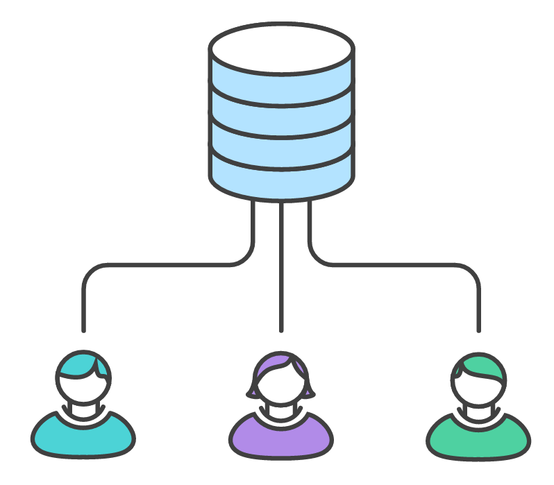

Stash
$ git stash save [msg]
Guardamos los cambios del workspace
$ git stash list
Mostramos los stash creados
$ git stash show [stash]
Mostramos un stash
$ git stash apply [stash]
Aplicamos los cambios desdeun stash (no lo borra)
$ git stash pop
Aplicamos los cambios desdeel primer stash de la lista
$ git stash drop [stash]
Borramos un stash específico
$ git stash clear
Borramos todo el stashTrabajando con Git - Modo remoto
Estados en Git
Workspace
Index
(Stage)Stash
HEAD
(local repo)Upstream
(remote repo)Trabajando con remote
$ git remote
Listamos todos los repos remotos
$ git remote -v
Listamos todos los repos remotoscon sus urls
$ git remote add [name] [url]
Añadir un nuevo remote
$ git remote rm [name]
Eliminar un remote
$ git remote rename [old] [new]
Renombrar un remoteTrabajando con remote
$ git push
Subir el contenido de HEADal remote
$ git push [remote] [branch]
Subir el contenido de HEADal remote [remote]y al branch [branch]
$ git fetch
Para SINCRONIZAR los cambios con el remoteremote (no modifica)
$ git pull
Descargamos los cambios del remotePull request
$ git request-pull <start> <url> [<end>]$ git request-pull v1 https://my.git.com/proyecto_1 master
Workflows

Flujo centralizado
Flujo con integrador
Flujo con integrador
Flujo de dictadores y tenientes
Git-flow
Conceptos clave
Entornos de despliegue
Feature
Release
Bug
Version
Git-flow cheatsheet
git-flow cheatsheetGithub ¿Qué es?
Crear usuario de Github
Github Join
Configurando nuestro perfil
Settings
Creando nuestro repositorio
New repository
Hacer commits en proyectos
Clone